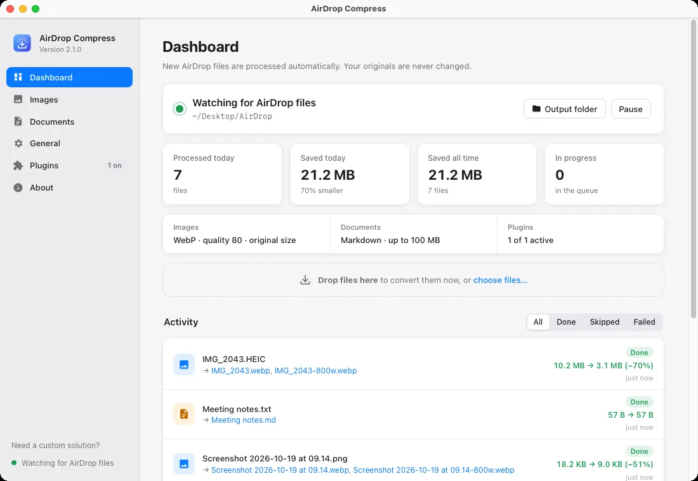
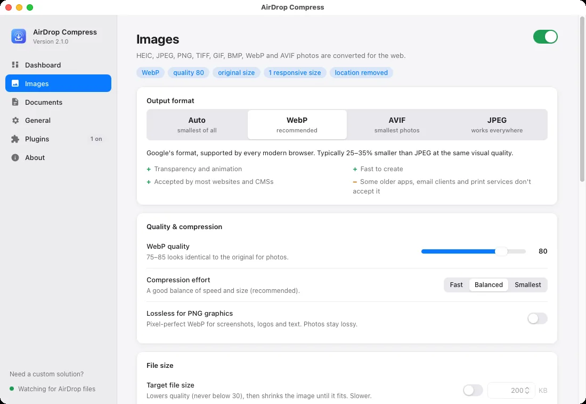

WebP, AVIF, JPEG or Auto
Pick a format, or let Auto encode all three and keep the smallest for each image. No single format wins every time.
Free & open source · macOS menu bar app
AirDrop Compress turns the photos and documents you AirDrop to your Mac into compressed WebP, AVIF or JPEG images and clean Markdown, automatically. Your originals are never touched.
Version {{VERSION}} · macOS 12 or later · Apple silicon · Install help

About the software
Photos from an iPhone arrive as large HEIC files that most websites, CMSs and email tools don't accept. Documents arrive in formats you can't easily search or reuse. AirDrop Compress fixes both the moment they land: no exporting, no online converters, no uploads.
It watches your AirDrop folder from the menu bar and converts new files within seconds. Batches of files are handled together.
iPhone photos typically shrink by 60–75% as WebP or AVIF with no visible difference, ready for the web, email or chat.
Everything happens on your Mac. Originals are never changed, and untrusted documents are converted in a sandbox.
Features
Pick a format, or let Auto encode all three and keep the smallest for each image. No single format wins every time.
Set the quality per format and the compression effort, or ask for a target such as “under 200 KB” and let it find the best quality that fits.
Limit the longest edge, and create responsive -800w copies for srcset, so phones download less.
Keep photo details, remove only the location, or strip everything. Keep the iPhone's Display P3 colours or convert to sRGB.
IMG_1286 Beach.HEIC becomes img-1286-beach.webp, with an optional JPEG fallback for <picture>.
PDF, Word, PowerPoint, Excel, RTF, EPUB, HTML, CSV and more become clean, searchable Markdown.
Live status, savings, and every file's result with a plain-language reason when something is skipped or fails.
See how big one of your own photos would be as WebP, AVIF and JPEG before you choose.
Add new file types with Python plugins that run in a macOS sandbox and only do what you approve.
How it works
macOS saves it to Downloads (or ~/Desktop/AirDrop if you sort AirDrops there).
It waits until the file is complete, checks it really came by AirDrop, and skips duplicates it has seen before.
Images become WebP/AVIF/JPEG; documents are converted to Markdown in a sandbox; plugins handle the rest.
New files appear in an airdrop-compress folder, with unique names. One notification sums up the batch.
Made for
Share holiday photos, receipts and notes without hitting email limits or “unsupported format” errors.
Product shots, team photos and documents from the phone go straight into your website, CMS or knowledge base.
Drop screenshots and assets from your phone and get srcset-ready WebP/AVIF with a JPEG fallback.
How to use
airdrop-compress folder.
Supported formats
→ WebP, AVIF or JPEG
Rotation applied, transparency and animation kept, optional resizing, metadata and colour control. Encoded with libwebp, libavif and libjpeg-turbo.
→ Markdown
Headings, lists and tables preserved by Microsoft MarkItDown, running in a sandbox with size and time limits.
→ Markdown
Read with macOS's own textutil, then converted to Markdown.
→ Markdown code block
Kept exactly as written, in a fenced code block under the file name.
Not supported yet: Pages, Numbers and Keynote files, videos, audio, ProRAW and scanned PDFs without text. These show as “Skipped” with the reason. Full format reference.
System requirements
Version {{VERSION}} · free and open source (MIT)
Open the .dmg and drag the app to Applications.
Open it. The app isn't notarised yet, so click Done, then System Settings → Privacy & Security → Open Anyway (one time only).
Click Allow when asked about your Desktop or Downloads folder.
Skip the Gatekeeper prompt after installing:
xattr -dr com.apple.quarantine "/Applications/AirDrop Compress.app"Build from source (any Mac with Python 3.10+):
git clone https://github.com/najathi/airdrop-compress.git && cd airdrop-compress && packaging/build.shCustom solutions
Like how AirDrop Compress works, but need it to fit your business? Connect it to your CMS or storage, automate a whole image pipeline, or build something entirely new. I'll help you turn the idea into a polished, reliable app.
Business inquiries
For companies and teams that need more than the free app.
macOS apps, web apps and internal tools built around your workflow.
Business-specific features, and connections to your CMS, cloud storage, DAM or APIs.
Hands-off pipelines for images, documents and files, end to end.
Managed rollout across many Macs, custom defaults and signed builds.
Collaborations, white-label versions and co-development.
Technical support, architecture advice and code reviews.
FAQ
Yes. It's free and open source under the MIT licence.
No. Originals are only ever read. Results are saved as new files in the output folder, and existing files are never overwritten.
No. Everything is processed on your Mac. The only network request is an optional daily update check to GitHub.
The app isn't notarised by Apple yet. Confirm once in System Settings → Privacy & Security → Open Anyway. The download includes an illustrated guide.
WebP for general web use, AVIF for the smallest photos where it's supported, JPEG when compatibility matters most. Auto picks the smallest for each image, and the Compare formats tool shows the difference for your own photos.
WebP, AVIF and JPEG are lossy, but at the default settings the difference is very hard to see in photos, while files are typically 60–75% smaller than iPhone originals. You can raise the quality or use lossless WebP for graphics.
To an airdrop-compress folder inside your AirDrop folder. You can choose any other folder in General → Output folder.
Yes. Drop any file on the Dashboard, or use Convert Files… in the menu bar. You can also turn off “Only AirDrop files”.
Yes, if “Open at login” is on (the default). It starts quietly in the menu bar.
Not yet. Export Pages, Numbers and Keynote files to PDF or Office first. Scanned PDFs need OCR, which a plugin could add.
Plugins stay off until you approve them, and run in a macOS sandbox. They can only read the file they convert and write their own results, with no internet access, other programs, clipboard or other files unless you allow it.
Support & troubleshooting
Fixes for skipped files, permissions, first launch and more.
Install, user guide, formats, plugins and developer docs.
Open an issue on GitHub with your macOS and app version.
Suggest formats, options or plugin ideas.
How files are kept safe, and how to report a vulnerability privately.
Email for help that doesn't fit an issue.
Open source
Read the code, suggest changes, or build a plugin. Contributions of all sizes are welcome.